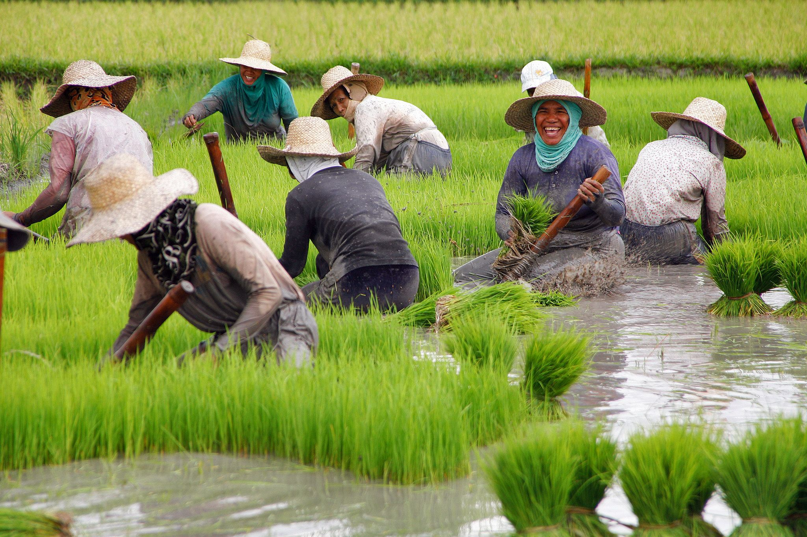
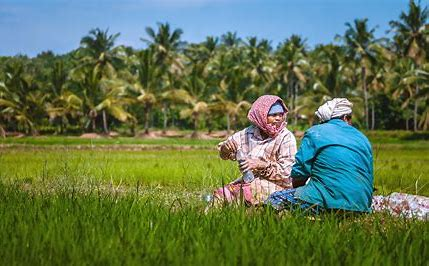
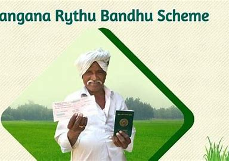
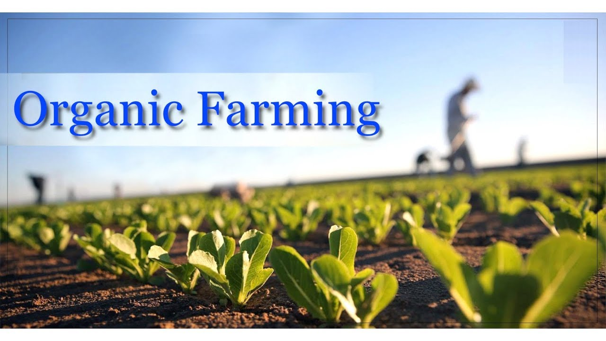
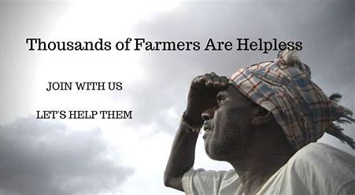
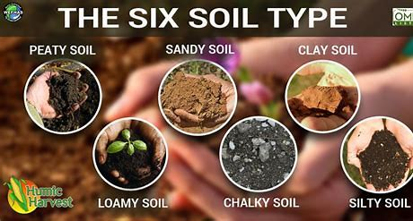
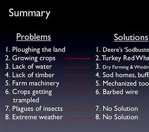

ABOUT
This Farmer Portal facilitates a single window solution to the farmers and stakeholders to disseminate the information about the Government schemes,market rates, Seed information, Farm Machinery, Fertilizers, soil info,weather information, advices ,problems and solutions in farming sector.
It also provides easy portal access by providing various required links for government schems, weather information, market rates and other relevant links.
It helps farmers to get all the required information at one place without any delay and waste of time.
There is also entry form for writing query.
There is a buyer and seller page where farmer can enter the crop and required details so that the buyer can see the informatiom and contact them and buy the crop that he want, so that both buyer and seller will be benificial without mediator.
RYTHU BANDU SCHEME

Rythu Bandhu scheme also Farmers’ Investment Support Scheme (FISS) is a welfare program to support farmer’s investment for two crops a year by the Government of Telangana. The government is providing 58.33 lakh farmers, ₹5000 per acre per season to support the farm investment, twice a year, for rabi (Yasangi) and kharif (Rainy) seasons.
Established: 10 May 2018
Founder: Government of Telangana
Location: Telangana, India
Type of project: Farmer Investment support
CLICK BELOW FOR RYTHU BANDU PAGE
RYTHU BANDU LINK
AAROGYA SATU SCHEME

Aarogya Setu (translation from Sanskrit: the bridge to health) is an Indian COVID–19 "contact tracing, syndromic mapping and self-assessment" digital service, primarily a mobile app. The stated purpose of this app is to spread awareness of COVID–19 and to connect essential COVID–19-related health services to the people of India.
This app is an updated version of an earlier app called Corona Kavach (now discontinued) which was released earlier by the Government of India.
Developer(s) : National Informatics Centre, Government of India
Initial release : April 2020
Operating system : Android 5 or above · iOS 10.3 or above · IVRS · KaiOS
Available in : 12 languages
Type ::Health care
CLICK BELOW FOR AAROGYA SATU PAGE
AAROGYA SATU LINK

The market price is the current price at which a good or service can be purchased or sold.
The market price of an asset or service is determined by the forces of supply and demand; the price at which quantity supplied equals quantity demanded is the market price.
In financial markets, the market price can change quickly as people change their bid or offer prices, or as sellers hit the bid or buyers hit the offer.
CLICK BELOW TO FIND CROPS RATE
CROPS RATE LINK

Agriculture or farming is the practice of cultivating plants and livestock.[2] Agriculture was the key development in the rise of sedentary human civilization, whereby farming of domesticated species created food surpluses that enabled people to live in cities.
New Agriculture Technology in Modern Farming
Indoor Vertical Farming...
Farm Automation. ...
Livestock Farming Technology. ...
Modern Greenhouses. ...
Precision Agriculture. ..
CLICK BELOW TO KNOW MORE TECHNOLOGY INFORMATION
TECHNOLOGY INFORMATION LINK
Agricultural weather stations are instruments that measure and display different local measurements to help with ideal farming conditions. This data can be observed at the site or over the internet. Most weather stations measure wind speed and direction, pressure, temperature, rain level, and solar radiation.
CLICK BELOW TO KNOW WEATHER INFORMATION IN A PLACE
WEATHER INFORMATION LINK

Organic farming, in the European Union more commonly known as ecological farming or biological farming,[1] is an agricultural system that uses fertilizers of organic origin such as compost manure, green manure, and bone meal and places emphasis on techniques such as crop rotation and companion planting. It originated early in the 20th century in reaction to rapidly changing farming practices. Certified organic agriculture accounts for 70 million hectares globally, with over half of that total in Australia.
CLICK BELOW TO KNOW MORE ABOUT MODERN ORGANIC FARMING METHODS
ORGANIC FARMING

What kind of environment is suitable?
Which Types of crops are suitable?
What inputs are needed?
Seed collection, viability and planting the seeds
Planting out
Pruning
Planting the crops
After the Harvest
CLICK BELOW FOR MORE ADVICES FOR BETTER FARMING
ADVICES FOR BETTER FARMING

Soil formation is the combined result of physical, chemical and biological processes under certain environmental conditions. The soil is a combination of biotic and abiotic components. It contains microorganisms, worms, minerals, decaying organic matters, hummus, elements like water and air which altogether makes the soil fertile and source of nutrients. The soil is mainly of three types: sandy soil, clayey soil, and loamy soil. Among this loamy soil is more suitable for farming. An ideal soil for agriculture has the following characteristics:
Good water holding capacity
Proper aeration
Good consistency (texture)
Balanced acid and alkaline content
Rich in nutrients (micro and macronutrients)
CLICK BELOW FOR MORE SOIL INFORMATION
SOIL INFORMATION

Major problems and solutions for livestock farming
Inadequate availability of credit.
Limited availability of quality breeding bulls.
Deficiency of vaccines and vaccination setup.
Due to urbanization majority of grazing lands are degraded or encroached.
Feed and fodder diversion ingredients for industrial use.
CLICK BELOW FOR PROBLEMS, SOLUTIONS
PROBLEMS AND SOLUTIONS
For any queries, Farmers can place a toll free call on Bayer’s national helpline number 1800-120-4049 from both landline and mobile phones. The helpline will be operational between 09:00 am – 06:00 pm every Monday to Saturday.
CLICK BELOW FOR HELP-LINE
HELP-LINE